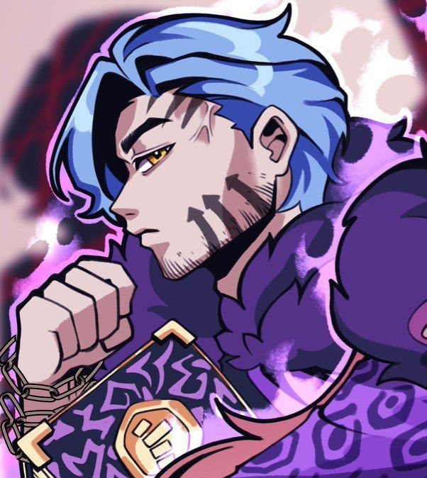
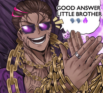

Большой Брат Среднего Пальца. Свой титул получил уже давненько, очень ждет повышения до Великого брата.
Громкий, экспрессивный, излишне-социальный. Любит тусить со своей семьей, и впринципе за любой движ.
Обычный Большой Брат. Обычно отвечает за два ночных клуба в U-Corp, но с недавнего времени на его плечи так-же упала роль няньки Шоквейв.
Книга мести, цепи и тату - вот мои документы!
Спустя столько времени...
— Сестра? —
Наконец-то. Зацепка. Настоящая зацепка.
— Сестра! Мелкашка! —
Девушка быстро вскочила со стола и отправилась к двери, открывая её своей левой рукой, только чтобы увидеть перед собой груду мышц, более известного как Большой Брат Десмонд.
«Что тебе надо?» — спросила Шоквейв, смотря на старшего. Ей сейчас явно было не до него... — «У меня тут дела. Уйди с дороги.»
Она попыталась рукой отодвинуть его в сторону, но тот не двинулся с места.
«Ну-ну, сестра, что за дела могут быть важнее семьи!» — воскликнул Десмонд, погладив девушку по голове, впрочем, той это судя по всему не сильно понравилось. — «Ты прямо таки оскорбляешь меня, мелкая!»
Шутливо сказал он, совсем игнорируя злой взгляд Шоквейв. Впрочем... он довольно быстро превратился в что-то более нейтральное.
«Слушай, Десмонд,» — спросила она. Десмонд слегка сфокусировал взгляд за очками, смотря на девушку. Заинтересовался. — «Ты случаем не хочешь сходить на охоту?»
На секунду брат совсем замолчал, перед тем как громко рассмеяться.
«Хо-хо! Сестра, а я вижу ты наконец повзрослела?!» — он приопустил золотые очки с фиолетовыми линзами ниже на нос, сверкнув оскалом и глазами цвета золота. — «Зачем ты вообще спрашиваешь? Я за любой движ!»
✦ ✦ ✦
Прошло уже слегка больше тридцати минут с момента выхода из ночного клуба.
Зацепка привела девушку с отрядом в один заброшенный склад, который судя по наводке был заполнен мед. оборудованием и использовался как временное место ночлега для Крыс.
К счастью для этих самых Крыс, прошлый владелец даже не позаботился о замке на двери, поэтому те могли спокойно входить и выходить.
К несчастью для них, к ним сегодня решила наведаться очень громкая электрическая музыка.
БАМ!!
С грохотом, и так открытая дверь пролетела в соседний край здания, перед тем как разбиться на доски и щепки.
«Так?! Ну и где тот негодяй о котором ты говорила?» — спросил Большой Брат, ударяя кулак о кулак, сотрясая воздух вокруг. — «Время платить по счётам, щенки!»
Он зашёл в комнату, наполненную напуганных Крыс и простых жителей.
Шоквейв не сильно спешила с ответом, даже наоборот, она медленно вошла в комнату, вечно поправляя цепи и зорким взглядом одного оставшегося глаза осмотрела всех внутри.
«Где Рэтчет?» — спросила она, явно не желая никакого ответа кроме точной дислокации упомянутой. — «Отвечайте побыстрее.»
Однако, все промолчали.
Так же медленно как раньше, она прошла дальше внутрь здания, пока остальные братья агрессивно мерцали цепями в сторону крыс и бедных горожан.
Подойдя к столу, находящимся за одной из тканевых занавесок, она осмотрела всё что на нём было, в надежде найти наводки.
Однако...
Там было почти полностью пусто.
Девушка довольно спокойно, на вид, отправилась к выходу, перед тем как одна из Крыс, заметив момент, решив что Шоквейв — главарь всей пачки, спрыгнул с мед. койки, и стеклянным обломком попытался вскрыть ей часть спины.
Однако, услышав имплантом резкий звук, оттолкнувшись от земли ногой и приподняв одну из ног слегка вверх, она со всей что есть дури ударила с разворота по боку крысы ногой.
Послышался хруст рёбер, после чего крыса улетела к ближайшей стене и сложилась об неё в гармошку. Мясную такую, гармошку.

«Хороший ответ мелкая!» — сказал старший брат, прерывая насилие резким смехом и хлопками рук. — «Ладно, что у нас по книге за нападение...»
«Её тут нет.» — сказала со вздохом Шоквейв, разворачиваясь и направляясь обратно к выходу. — «Братья. Прошу простить за потраченное время. Наводка была пустышкой. Я сама разберусь с информатором.»
«Да ничего, сестра, щас мы тут разберёмся и сразу всё устроим.» — говорил брат, не отворачиваясь от фиолетовой книги в его руках. — «Ну так вот... где я остановился...»